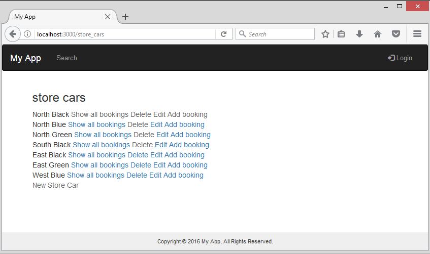

Last modified: Thu Aug 16 2018 22:49:02 GMT+0800 (Malay Peninsula Standard Time)
Chapter 2. Joint Table and Booking GEM
In this chapter, a booking GEM will be used to implement a booking feature for a Basic Car Reservation System that has multiple locations. Since not all the files generated by generator of the Gem are useful, I will show how to determine the unnecessary files. To make it into a more interesting tutorial, I will also try to replace part of the unnecessary files with a Gem that can do the same task. As a reminder, you should always try to look up for the Gem that will serve your need.
There are two (or more) booking related Gems at the time that this tutorial is written, bookable and acts_as_bookable. After spending some time looking and reading the repository, I found out that bookable is a better choice and will serve my need.
2.1 Create Car and Store Model
To create a car model, use the commands below. Figure 2.1.1 shows the result where the code below is executed. You should include the all fields (parameters) you need while using the scaffold command.
rails g scaffold Store name:string
Figure 2.1.1: Output of the terminal when the code is executed
Repeat the process above, but this time, we are going to create a Car model instead.
rails g scaffold Car name:string
2.2 Joint table for Car and Store
If you are trying to implement a Booking feature, take Chapter 2.2 aa reading and follow the instruction in Chapter 2.3 instead.
Since each of the make and model of the vehicle will be available in multiple locations, we need to create a join table. A joint table is used to store the primary keys of two database table. Figure 2.2.1 shows an Entity Relationship diagram of Store and Car entity. Each of the entity contains two attributes: id (primary key) and name.
Figure 2.2.1: ER Diagram of Store and Car Entity
The ER diagram above will be mapped into the Relation Schema as shown in Figure 2.2.2.
Figure 2.2.2: Relational Schema of the ER Diagram in Figure 2.2.1
To create a join table model, use the commands below. Figure 2.2.3 shows the result after the code below is executed.
rails g scaffold StoreCar store:references car:references
Figure 2.2.3: Output of the terminal when the code is executed
After the join table is created. We have to add the correct relationship that correspond to the join table we created. Follow the instruction in Table 2.2.1, 2.2.2, and 2.2.3 to add the code.
Table 2.2.1: Code to add to store.rb
#MyApp/app/models/store.rb
has_many :cars, :through => :store_cars
has_many :store_cars, :dependent => :destroy
Table 2.2.2: Code to add to car.rb
#MyApp/app/models/car.rb
validates :name, presence: true, uniqueness: true
has_many :stores, :through => :store_cars
has_many :store_cars, :dependent => :destroy
Table 2.2.3: Code to add to store_car.rb
#MyApp/app/models/store_car.rb
validates_uniqueness_of :car_id, :scope => [:store_id]
belongs_to :store
belongs_to :car
The code in Table 2.2.1, 2.2.2, and 2.2.3 defines the relationship between stores, cars, and store_cars model. Please replace the models with the models that you have; uniqueness will ensure that there is no duplicate of the car with the same name; validates_uniqueness_of will ensure that there is no duplicate pair of car and garage.
Now, migrate your newly created database by using the command rake db:migrate. Verify the model that we have created using scaffold command.
Navigate to localhost:3000/stores and populate create some stores. Figure 2.2.4 shows the Store is populated with some sample data.
Figure 2.2.4: Sample data created for Store
Repeat the same process by navigating to localhost:3000/cars. Figure 2.2.5 shows the Store is populated with some sample data.
Figure 2.2.5: Sample data created for Car
Repeat the same process by navigating to localhost:3000/store_cars. Figure 2.2.6 shows the ability of associate a car to the store using the drop down menu.
Figure 2.2.6: Sample data created for Store Car
Figure 2.2.8 shows Store and Car are showing the random values.
Figure 2.2.7: Store Cars showing some random values
To fix the error, replace the following code with the code shown in Table 2.2.4. The final result of the modification in Figure 2.2.8.
Table 2.2.4: Code to add to view
#MyApp/app/view/store_cars/index.html.erb
#code to remove
<%= store_car.store %>
<%= store_car.car %>
#code to add
<%= store_car.store.name %>
<%= store_car.car.name %>
Figure 2.2.8: Code added to view
By adding .name, we are able to retrieve the name field in store and car model. The final result of the joint table is Figure 2.2.9.
Figure 2.2.9: Store Cars showing the correct values
2.3 Installing Bookable Gem
To begin, head to the bookable’s repository and follow the instruction to install the Gem or follow the instruction in Chapter 2.3. Follow the instruction in Table 2.3.1 to add the code to Gemfile. Perform bundle installafter the modification is made.
Table 2.3.1: Code to add to Gemfile
MyApp/gemfile
gem 'bookable', '~> 0.0.52'
Figure 2.3.1 shows result of the the terminal after bundle install operation is executed. After installing the Gem, we received an error stating that our current GEM is causing some issue. Note that the Gem that I am using is 6 years old.
Figure 2.3.1: Result of the terminal after code execution
After analyzing the output, we can resolve this issue by downgrading the version of jbuilder from ~> 2.5 in Gemfile to greater than ~> 1.2. Run bundle install and the error should be gone and the GEM should be able to installed successfully without any issue.
As described in the Readme, the next step is to run the code generator.
rails generate bookable:install store_cars store:references car:references
The code generator above will install the required files as well as creating a joint table named store_cars. store_cars will contain two reference keys: car and store. Please refer to Chapter 3.2.2 to get detail explaination on what is a joint table. The author of the GEM did not say that we are allowed to use the code generator above to create a joint table. However, since we are not following the guideline, we have to take extra steps to get it to work.
The code generator will take about 30 seconds to up to a minute to generate the code. Figure 2.3.2 shows the complete output logs of my terminal.
Figure 2.3.2: Result of the terminal after code generation
From the above output, we can see that due to the downgrade of jbuilder, we are receiving a lot of errors. Don’t worry, I am going to explain how to resolve it later. Do note that Mime::JSON is caused by the jbuilder.
As discussed in Chapter 2.2, we have to add the relationships to the joint tables we created. Add the follow code shown in Table 2.3.2, 2.3.3, and 2.3.4 to the respective file and do not remove any line in the file. You may remove any line that contain duplicates.
Table 2.3.2: Code to add to store.rb
#MyApp/app/models/store.rb
has_many :cars, :through => :store_cars
has_many :store_cars, :dependent => :destroy
Table 2.3.3: Code to add to car.rb
#MyApp/app/models/car.rb
has_many :cars, :through => :store_cars
has_many :store_cars, :dependent => :destroy
Table 2.3.4: Code to add and remove from store_car.rb
#MyApp/app/models/store_car.rb
#Code to remove
validates :name, presence: true, uniqueness: true
#Code to add
validates_uniqueness_of :car_id, :scope => [:store_id]
belongs_to :store
belongs_to :car
In our view and controller, we have to replace all the code that are created by the default code generator. In Store_Cars’ controller, make the modification as stated in Table 2.3.5.
Table 2.3.5: Code to add to store.rb
#MyApp/app/controllers/store_cars_controller.rb
#remove the mentioned part from the code
def create
@store_car = StoreCar.create(store_car_params)
if @store_car.save
name = @store_car.name <<<<< Remove this line
redirect_to store_cars_path
flash[:notice] = "#{name} created"
else
render 'new'
flash[:error] = "Unable to create store car. Please try again"
end
end
#The code below is located at Private section
def store_car_params
params.require(:store_car).permit(:name, :delete)
end
#Code to add
#The code below is located at Private section
def store_car_params
params.require(:store_car).permit(:car_id, :store_id)
end
In Store_Cars’ view, make the modification as stated in Table 2.3.6 and 2.3.7.
Table 2.3.6: Code to add to view
#MyApp/app/views/store_cars/index.html.erb
#Code to remove
<%= store_car.name %>
#Code to add
<%= store_car.store.name %>
<%= store_car.car.name %>
#Add the line below to the end of the file
<%= link_to 'New Store Car', new_store_car_path %>
Table 2.3.7: Code to add to form
#MyApp/app/views/store_cars/_form.html.erb
#Remove everything in the file before adding the code below
#Code to add
<%= simple_form_for(@store_car) do |f| %>
<%= render 'errors' %>
<%= f.association :store %>
<%= f.association :car %>
<%= f.submit 'Submit' %>
<% end %>
In Booking’s view, make the modification as stated in Table 2.3.8, 2.3.9 and 2.3.10.
Table 2.3.8: Code to add to view
#MyApp/app/views/bookings/index.html.erb
#add the mentioned part to the code
<h3> Booking for
<%= @store_car.store.name %>
<%= @store_car.car.name %> <<<<< add this line
</h3>
Table 2.3.9: Code to add to view
#MyApp/app/views/bookings/new.html.erb
#add the mentioned part to the code
<h3> Booking for
<%= @store_car.store.name %>
<%= @store_car.car.name %> <<<<< add this line
</h3>
Table 2.3.10: Code to add to view
#MyApp/app/views/bookings/edit.html.erb
#add the mentioned part to the code
<h3> Booking for
<%= @store_car.store.name %>
<%= @store_car.car.name %> <<<<< add this line
</h3>
After the code above is added and replaced, we are able access our store_cars index page. Navigate to localhost:3000/store_cars and you should be able to get a screenshot similar to the one Figure 2.3.3. Figure 2.3.3 shows the current stage of the application after the modification in until this stage is made.

Figure 2.3.3: Current stage of the joint table index
Select any of the “store cars” and “Add booking”. A calendar as shown in Figure 2.3.4 will be rendered and you can now create your booking.
Figure 2.3.4: Calendar in Bookable Gem
Figure 2.3.5 shows a booking is created successfully.
Figure 2.3.5: A booking is created successfully
At this stage, you should be able to create, edit, and delete a booking and create, edit, and delete store and car association without any problem. If you are facing some errors, please go back and check the code. Figure 2.3.6 shows an association is created without any problem.
Figure 2.3.6: Result of Joint Table in Index Page
To verify our result, we can go one step further by investigate our data stored in our database. Figure 2.3.7 shows the content of the joint table in SQLiteStudio.
Figure 2.3.7: Result of Joint Table in SQLiteStudio
Figure 2.3.8 shows the content in the Car table.
Figure 2.3.8: Result of Car Table in SQLiteStudio
A screenshot is attached below to show the content of the Car table.

Figure 2.3.9: Result of Store Table in SQLiteStudio
2.4 Routing for Bookable GEM
As mentioned in one of the sections, our ideal booking feature will allow user to choose a car from a store. At the current stage, our booking feature works as shown in the route below.
localhost:3000/store_cars/2/bookings/1
Note: 2 = stores_car ID and 1 = booking ID.
However, our ideal routing that we are hoping to get is shown as below.
localhost:3000/stores/3/store_cars/2/bookings/1
Note: 3 = store ID, 2 = stores_car ID and 1 = booking ID.
In order to obtain the routing that we want, we have to modify our route files. Follow the instruction in Table 2.4.1.
Table 2.4.1: Code to add to routes.rb
#MyApp/config/routes.rb
#Code to remove
resources :store_cars do
resources :bookings
end
resources :stores do
resources :store_cars
end
#Code to add
resources :stores do
resources :store_cars do
resources :bookings
end
end
Figure 2.4.1 shows the result of the nested routing.
Figure 2.4.1: Content in routes.rb
In order to navigate from store to store_cars, we have to add the code shown in Table 2.4.2 to our store’s index page.
Table 2.4.2: Code to add to View
#MyApp/app/view/stores/index.html.erb
#Code to add
<td><%= link_to 'Show Car', store_store_cars_path(store) %></td>
Figure 2.4.2: Code added to View, Line 17
Now, visit the index page of stores and you will see that there is an option to show all the cars. Figure 2.4.3 shows the result of Store Index Page at this stage.

Figure 2.4.3: Stores’ Index Page
In order to show the correct cars that associate with the store, we have to filter the result from the table. To do that, add the code below to the corresponding file. Please refer to the screenshot below for where to put them.
Table 2.4.3 Code to add to Controller
#MyApp/app/controllers/store_cars_controller.rb
#Code to remove
def index
@store_cars = StoreCar.all
end
#Code to add
before_action :find_store
def index
if @store.nil?
@store_cars = StoreCar.all
else
@store_cars = StoreCar.where("store_id = ?", @store)
end
end
#it is best to add under private
def find_store
if params[:store_id]
@store = Store.find_by_id(params[:store_id])
end
end
Figure 2.4.4: Result of the Controller
In the Store_Cars’ index, we have to perform a small modification on the routes to show the booking. Perform the modification by following the instruction in Table 2.4.4.
Table 2.4.4: Code to add to View
#MyApp/app/views/store_cars/index.html.erb
#Code to remove/replaced with the code below
<%= link_to "Show all bookings", store_car_bookings_path(store_car) %>
<%= link_to "Delete", store_car_path(store_car), data: { confirm: 'Are you sure?' }, method: :delete %>
<%= link_to "Edit", edit_store_car_path(store_car) %>
<%= link_to "Add booking", new_store_store_car_booking_path(store_car) %>
#Code to add
<%= link_to "Show all bookings", store_store_car_bookings_path(@store, store_car) %>
<%= link_to "Delete", store_store_car_path(@store, store_car), data: { confirm: 'Are you sure?' }, method: :delete %>
<%= link_to "Edit", edit_store_store_car_path(@store, store_car) %>
<%= link_to "Add booking", new_store_store_car_booking_path(@store, store_car) %>
Now, return to the page and click on the “show car” link. You should be able to see all the result that belongs to the store. A screenshot is attached below to show result with filter after modification.
Figure 2.4.5: Index Page of Store Cars based on the Store selected
In order for our application to work properly, we have to get the store ID and pass the booking form.
Table 2.4.5: Code to add to Controller
#MyApp/app/controllers/booking_controller.rb
#Code to add
before_action :find_store
#it is best to add under private
def find_store
if params[:store_id]
@store = Store.find_by_id(params[:store_id])
end
end
In the booking’s form, make the modification stated in Table 2.4.6 below.
Table 2.4.6: Code to add to Booking form
#MyApp/app/views/bookings/_form.html.rb
#replace form_for with the code below
<%= form_for([@store, @store_car, @booking]) do |f| %>
Then, we have to fix all the routes in the booking controller so the page is being routed to the correct place. Follow the instruction in Table 2.4.7.
Table 2.4.7: Code to add to Controller
#MyApp/app/controllers/booking_controller.rb
#Replaced create, destroy, update, save booking with the code below
def create
@booking = Booking.new(params[:booking].permit(:store_car_id, :start_time, :length))
@booking.store_car = @store_car
if @booking.save
redirect_to store_store_car_bookings_path(@store, @store_car, method: :get)
else
render 'new'
end
end
def destroy
@booking = Booking.find(params[:id]).destroy
if @booking.destroy
flash[:notice] = "Booking: #{@booking.start_time.strftime('%e %b %Y %H:%M%p')} to #{@booking.end_time.strftime('%e %b %Y %H:%M%p')} deleted"
redirect_to store_store_car_bookings_path(@store, @store_car)
else
render 'index'
end
end
def update
@booking = Booking.find(params[:id])
# @booking.store_cars = @store_cars
if @booking.update(params[:booking].permit(:store_car_id, :start_time, :length))
flash[:notice] = 'Your booking was updated successfully'
if request.xhr?
render json: {status: :success}.to_json
else
redirect_to store_store_car_bookings_path(@store, @store_car)
end
else
render 'edit'
end
end
def save booking
if @booking.save
flash[:notice] = 'booking added'
redirect_to store_store_car_booking_path(@store, @store_car, @booking)
else
render 'new'
end
end
In the booking index page, make the modification stated in Table 2.4.8.
Table 2.4.8: Code to add to View
#MyApp/app/views/bookings/index.html.erb
#replaced the @booking.each for loop with the code below
<% @bookings.each do |booking| %>
<tr>
<td><%= booking.start_time.strftime('%e %b %Y %H:%M%p') %> </td>
<td><%= (booking.calculate_end_time + 60).strftime('%e %b %Y %H:%M%p') %></td>
<td><%= link_to "Delete", store_store_car_booking_path(@store, @store_car, booking), data: { confirm: 'Are you sure?' }, method: :delete %></td>
<td><%= link_to "Edit", edit_store_store_car_booking_path(@store, @store_car, booking) %></td>
</tr>
<% end %>
We have completed all the modification at this point. The modification above will fixed all the issue with routing and create, edit, and delete our booking. Figure 2.4.6 shows our application at the current stage. We are able to add a booking now.
Figure 2.4.9: Booking feature added successfully
Figure 2.4.10 shows a booking is created successfully.

Figure 2.4.10: Booking is created successfully
Figure 2.4.11 shows that a booking is deleted successfully.
Figure 2.4.11: Booking is deleted successfully
Figure 2.4.12 shows that data are stored in and deleted from the database successfully.
Figure 2.4.12: Booking table shown in SQLiteStudio
2.5 Result Verification with SQLiteStudio
To verify the result even further, we can look our database table in SQLite. Figure 2.5.1 shows the bookings table that we have currently after populating some sample data.
Figure 2.5.1 shows that we have created car, ABC DEF, and have it successfully stored in the cars database table.
Figure 2.5.1: Car Table in SQLiteStudio
Figure 2.5.2 shows that we have created a booking that begin from the time indicated in start_time and ends on the date and time indicated on end_field. The length of the reservation is indicated in the length field. The car_id table is a reference key, referencing to the car’s id in the cars table.
Figure 2.5.2: Booking Table in SQLiteStudio